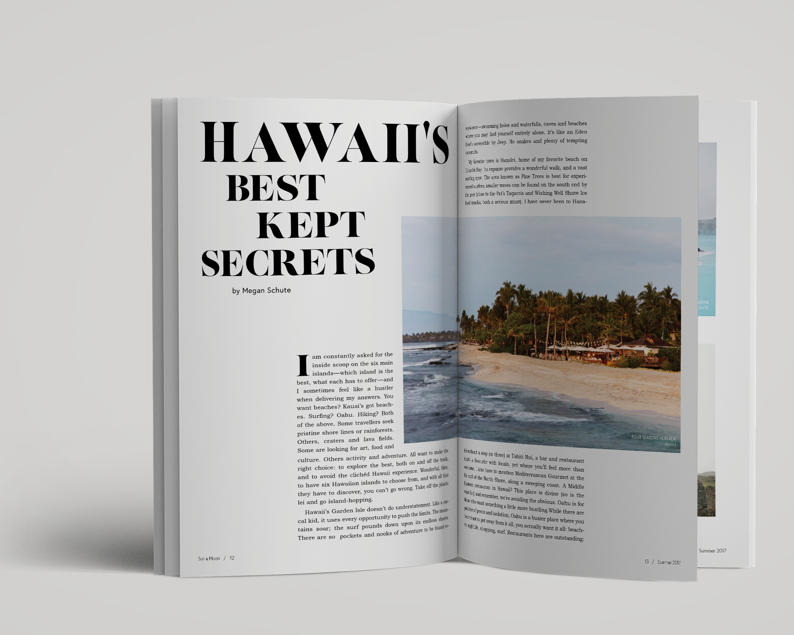

sun & moon
Sun & Moon, a conceptual travel and lifestyle magazine, was created as an exploration and study of editorial design. The style is meant to be minimal; I hoped to create something that appears light and airy, is aesthetically pleasing, and provides information in a stylish, yet informative way.

![[Magazine Cover]](img/CoverandSpread.png)
![[Iceland Closeup]](img/IcelandCloseupcopy.png)
![[Cover and Spread]](img/HawaiiSpread.png)
![[ToC Closeup]](img/ToCCLoseupcopy.png)